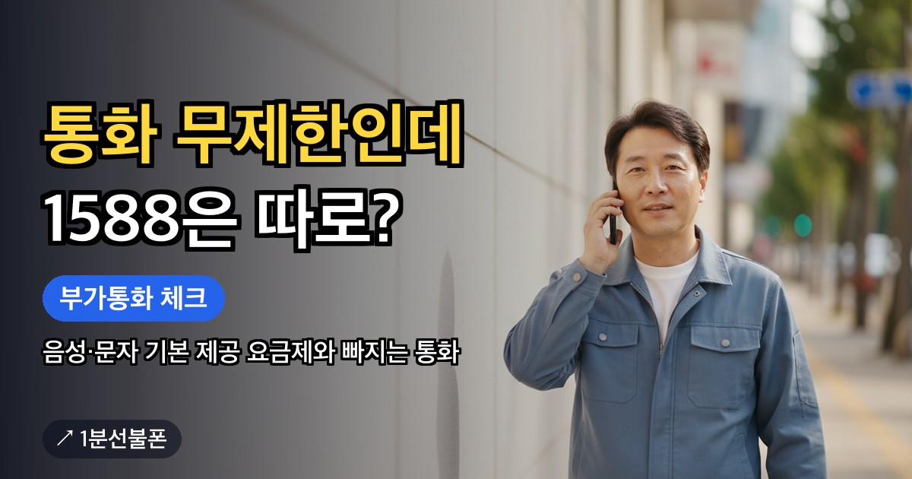

선불폰 요금제는 한 줄로 순위를 매기기보다 이 번호로 무엇을 할지부터 정해야 고르기 쉽습니다. 인증 문자만 받으면 되는 사람과 매일 영상을 보는 사람에게 맞는 요금제는 전혀 다르기 때문입니다. 개통 직전에 바로 고를 수 있도록 목적별 출발점과 고르는 순서를 정리했습니다.
- 요금제는 쓰임새가 먼저 — 12,100원부터 홈페이지 기준 85,900원까지
- 인증 문자·번호 유지가 목적이면 12,100원부터 시작하는 최저가 구간
- 감이 안 오면 가장 많이 선택하는 선불 396 10.3G(월 39,600원)
- 5G 휴대폰이면 L망 5G 20GB+(월 46,400원), LG U+망 유심 필요
- 매일 데이터를 많이 쓰면 선불 770·LTE 비디오, 약정·위약금 없음
선불폰 요금제 추천, 가격표보다 쓰임새를 먼저 보세요
선불폰 요금제는 12,100원부터 시작하고, 홈페이지 기준으로 가장 비싼 요금제가 85,900원입니다. 같은 선불폰이라도 이 사이에서 무엇을 고르느냐에 따라 한 달 쓰임이 크게 달라집니다. 이 글에서 다루는 요금제는 많이 선택하는 것 위주이고, 그 밖의 구성은 요금제 페이지 전체 목록이나 상담으로 확인할 수 있습니다.
요금제를 고를 때 흔한 실수는 두 가지입니다. 쓰지도 않을 데이터에 큰 요금을 내는 것, 그리고 너무 작은 요금제를 골라 한 달 중간에 데이터가 모자라는 것입니다. 비싼 요금제가 늘 좋은 것도, 싼 요금제가 늘 이득인 것도 아니어서 번호의 쓰임새부터 정하는 편이 빠릅니다.
목적별 출발점 — 한 표로 보는 선불폰 요금제 종류
아래 표는 사용 목적에서 출발해 먼저 살펴볼 요금제를 짝지은 것입니다. 표의 요금제가 전부는 아니며, 최종 조건은 신청 화면에서 확인합니다.
| 이런 목적이라면 | 먼저 볼 요금제 | 월 요금 | 데이터 | 망 |
|---|---|---|---|---|
| 인증 문자 받기·번호 유지 | 최저가 구간 | 12,100원부터 | 요금제별로 다름 | 신청 화면에서 확인 |
| 메신저·지도·웹 검색 같은 일상 | 선불 396 10.3G | 39,600원 | 10.3GB, 이후 3Mbps | KT · LG U+ |
| 5G 휴대폰으로 넉넉하게 | L망 5G 20GB+ | 46,400원 | 20GB, 이후 3Mbps | LG U+ |
| 매일 일정량씩 꾸준히 | 선불 770 | 77,000원 | 11GB + 매일 2GB | KT · LG U+ |
| 영상 위주 대용량 | LTE 비디오 / 매일 5GB | 85,900원 | 100GB(KT망) 또는 매일 5GB(LG U+망), 이후 5Mbps | KT · LG U+ |
표는 왼쪽에서 오른쪽으로 읽으면 됩니다. 목적에 맞는 줄을 찾고, 월 요금이 예산 안에 들어오는지 본 다음, 마지막으로 그 망의 유심을 구할 수 있는지 확인하면 후보가 하나로 좁혀집니다.
인증·번호 유지가 목적이라면 — 12,100원부터
은행 앱 인증 문자를 받거나 오래 쓴 번호를 살려 두는 것이 목적이라면 데이터 많은 요금제는 필요 없습니다. 12,100원부터 시작하는 최저가 구간이 출발점이고, 가벼운 사용을 전제로 한 가격대라 통화·문자·데이터 제공량은 신청 화면에서 확인한 뒤 고르면 됩니다.
인증 용도로 쓸 때 짚어 볼 점은 본인인증 가능한 선불폰, 번호만 남겨 두는 방법은 번호 유지 요금제 글에 따로 정리돼 있습니다.
일상용이라면 — 가장 많이 고르는 선불 396 10.3G
메신저, 지도, 웹 검색, 가끔 보는 영상 정도라면 월 39,600원 선불 396 10.3G가 무난한 출발점입니다. 실제로 가장 많이 선택되는 요금제이고, 10.3GB를 다 쓴 뒤에도 3Mbps로 이어서 쓸 수 있습니다. 이 속도가 체감상 어느 정도인지는 데이터 무제한 선불폰 글에서 다뤘습니다.
이 요금제는 KT망과 LG U+망에 모두 있어 유심을 사기 편한 쪽으로 고를 수 있습니다. CU나 GS25가 가깝다면 KT망 바로유심이, 이마트24·B마트·지하철 역 자판기를 쉽게 들를 수 있다면 LG U+망 모두의원칩도 선택지가 됩니다. 음성·문자는 두 망 모두 기본 제공이고, 대표번호·영상통화에 쓰는 부가통화 분수만 KT망 30분, LG U+망 50분으로 갈립니다.
5G 휴대폰이라면 — L망 5G 20GB+
5G 단말기를 쓰고 있고 5G로 연결하고 싶다면 L망 5G 20GB+(월 46,400원)를 보세요. 기본 데이터가 20GB로 396 요금제의 두 배에 가깝고, 다 쓴 뒤에는 똑같이 3Mbps로 이어집니다. 두 요금제의 월 요금 차이는 6,800원입니다.
이름 그대로 LG U+망 요금제라 유심도 LG U+망용을 준비해야 하고, 편의점에서는 검은색 포장의 모두의원칩이 해당합니다. 5G 휴대폰이라도 지원 단말기와 이용 조건이 따로 있으니 신청 화면에서 내 기종이 대상인지 먼저 확인하세요. 5G가 꼭 필요하지 않다면 396 요금제로도 충분할 수 있습니다.
매일 많이 쓴다면 — 선불 770과 LTE 비디오
출퇴근길 영상이나 음악 스트리밍처럼 데이터를 매일 꾸준히 쓴다면 가격대가 높은 두 요금제가 후보입니다.
- 선불 770(월 77,000원): 11GB에 매일 2GB가 더해지는 구성이라 하루하루 비슷한 양을 쓰는 사람에게 맞습니다.
- LTE 비디오 / 매일 5GB(월 85,900원): KT망은 100GB, LG U+망은 매일 5GB를 주고 다 쓴 뒤에는 5Mbps로 이어져, 영상을 길게 보는 사람에게 맞습니다.
두 요금제의 차이는 월 8,900원입니다. 금액이 큰 구간이니 고르기 전에 휴대폰 설정에서 지난달 데이터 사용량을 한 번 확인해 보세요. 매달 10GB 안팎을 쓴다면 396 요금제로 충분할 수 있고, 그보다 훨씬 많이 쓰는 달이 이어진다면 이 구간을 고르는 것이 맞습니다.
고른 뒤에는 — 신청 화면에서 다시 선택하세요
이 사이트에서 요금제를 살펴봤더라도 그 선택이 신청서에 자동으로 넘어가지는 않습니다. 앤텔레콤 신청 페이지에서 원하는 요금제를 다시 직접 골라야 하고, 최종 조건도 그 화면이 기준입니다. 선불 요금제는 약정·위약금 없음, 가입비 없음이라 처음 고를 때 부담이 덜합니다.
유심은 요금제와 별도로 6,600~8,800원이 들고, 미리 준비해 두면 요금제를 고른 뒤 개통 완료까지 5분이면 됩니다. 신청 단계의 본인 확인은 본인 명의 간편인증서로 합니다. 2026년 10월부터는 안면인증을 반드시 통과해야 개통할 수 있습니다. 얼굴에 형광등 반사가 생기면 인식이 더뎌지니 서 있는 자리나 방향을 바꿔 그 반사부터 없애고, 고개를 돌릴 때는 시선을 화면에 붙잡아 두지 말고 함께 옮기세요.
개통 후 본사 확인 전화(해피콜)에 응답하지 않으면 번호가 해지될 수 있다는 점도 기억해 두세요. 여기서 다루지 않은 구간까지 펼쳐 보려면 요금제 표 전체를 열어 비교하세요.
자주 묻는 질문
처음 선불폰을 쓰는데 어떤 요금제가 무난한가요?
선택 비율이 가장 높은 건 월 39,600원 선불 396 10.3G입니다. 데이터를 거의 쓰지 않으면 더 낮은 구간이, 영상을 많이 보면 더 큰 구간이 맞으니 한 달 사용량을 기준으로 고르세요.
선불폰 요금제는 이 글에 나온 것뿐인가요?
아닙니다. 여기서는 많이 고르는 요금제를 중심으로 정리했고, 나머지는 요금제 페이지의 전체 목록이나 상담으로 확인할 수 있습니다.
미납이 있으면 고를 수 있는 요금제가 달라지나요?
신용조회 없이 개통하는 선불폰이라 미납·연체·신용불량이어도 개통할 수 있고, 요금제는 사용 목적에 맞춰 고르면 됩니다.
5G를 쓰려면 어느 망을 골라야 하나요?
홈페이지에 안내된 5G 요금제는 L망 5G 20GB+(월 46,400원)로 LG U+망입니다. LG U+망 유심을 준비하고, 쓰는 휴대폰이 지원 단말기인지도 확인하세요.
요금제 값에 유심 값도 들어 있나요?
유심은 요금제와 따로 준비합니다. 편의점 구매가는 6,600~8,800원이고, 예전에 다른 통신사에서 받은 유심은 재사용이 안 되니 새로 마련해야 합니다.
같이 보면 좋은 글

통화 무제한 선불폰 — 음성·문자 기본 제공 요금제와 빠지는 통화
전화를 자주 거는 사람이 선불폰을 알아볼 때 가장 먼저 걸리는 건 통화량입니다. 선불폰에도 음성통화와…

번호 유지 요금제, 통화 안 해도 번호만 남기는 법
번호 유지 요금제를 찾는다면 통화·데이터가 많이 필요한 게 아니라 번호 자체를 잃지 않는 게 목적일…

가장 저렴한 선불폰, 첫 달 실제 비용은 얼마일까요
선불폰 중 가장 저렴한 조합을 찾는다면 유심비와 요금제를 함께 봐야 합니다. 편의점 유심은…
미성년자 선불폰 개통 — 셀프개통은 안 되고 보호자가 센터에서 접수합니다
자녀 이름으로 선불폰을 만들어 주려는 보호자가 먼저 알아야 할 것은 개통 방식입니다. 앤텔레콤 안내에서…